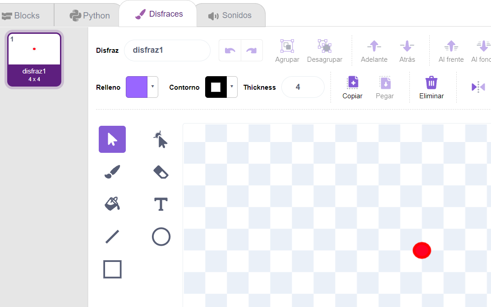
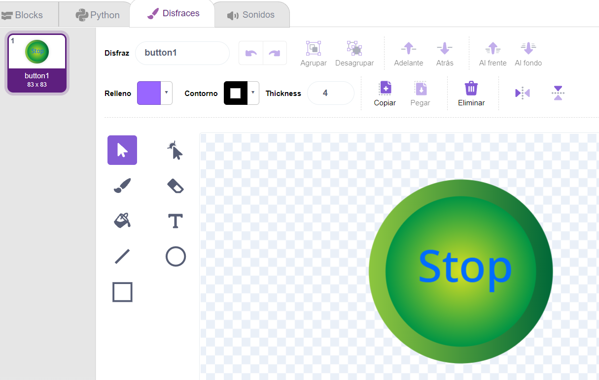
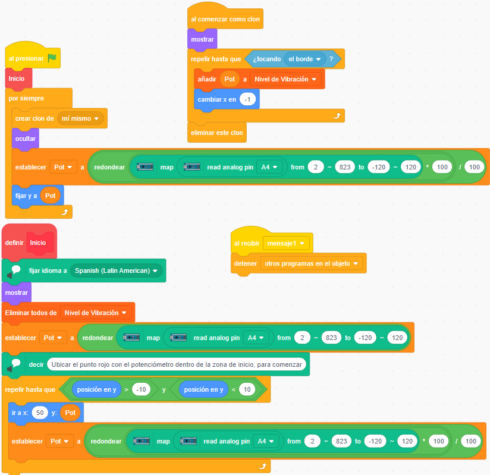
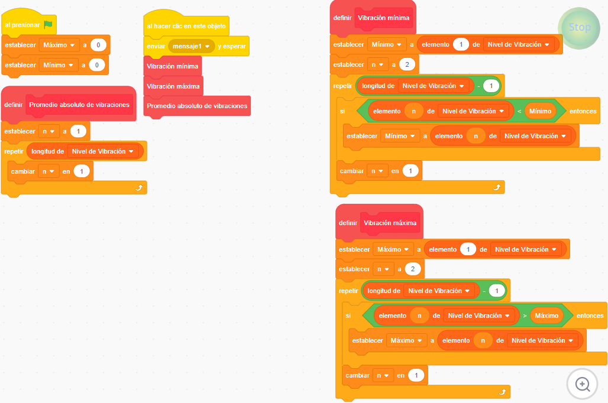
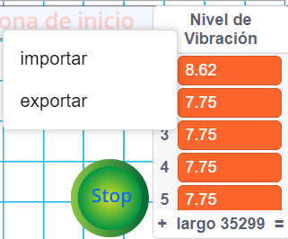
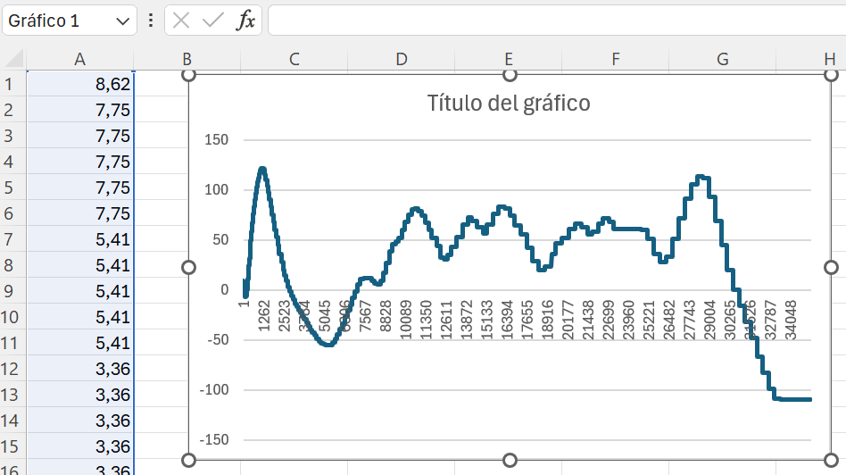

El potenciómetro para simular fenómenos naturales
Podemos usar el potenciómetro de PonchoBot para ingresar valores analógicos (entre 0 y 823), a través de los pines analógicos de Arduino Nano (en nuestro caso A4). En este caso vamos a simular el ingreso de valores provenientes de un movimiento sísmico, para ser graficados en Pictoblox. Como siempre, alentamos la creación de nuestros propios prototipos, a partir de los ejemplos planteados en esta propuesta.
Para ello vamos a poner un escenario de cuadrícula con una zona de inicio, y crear dos objetos/personajes: un punto rojo y un botón de stop.
|  |  |
1.- El Punto
En el objeto punto, vamos a programar "la huella" que va dejando en pantalla, cada valor que ingresa por el pin A4. Para ello nos vamos a valer de la creación de clones y su ubicación en las coordenadas x,y. El valor de x será constante y el valor de y dependerá de lo leído en el pin A4 (valores que irán cambiando a medida que se gire la perilla del potenciómetro). Sus bloques de programa son:

2.- El Button1
En el objeto Button1 vamos a dar la orden para detener el ingreso de valores y hacer los cálculos para la obtención de los valores máximo y mínimo. Para ello vamos a crear las variables Máximo - Mínimo - n y una lista Nivel de vibración, donde se irán acumulando los valores recibidos del potenciómetro. Sus bloques de programa son:

Se pueden obtener más valores de interés, como por ejemplo: promedio, amplitud (diferencia entre el Máximo y el Mínimo), etc. También, los valores de la lista Nivel de vibración, se pueden exportar y almacenar en un archivo txt, para luego ser usados en una planilla de cálculo.
|  |  |